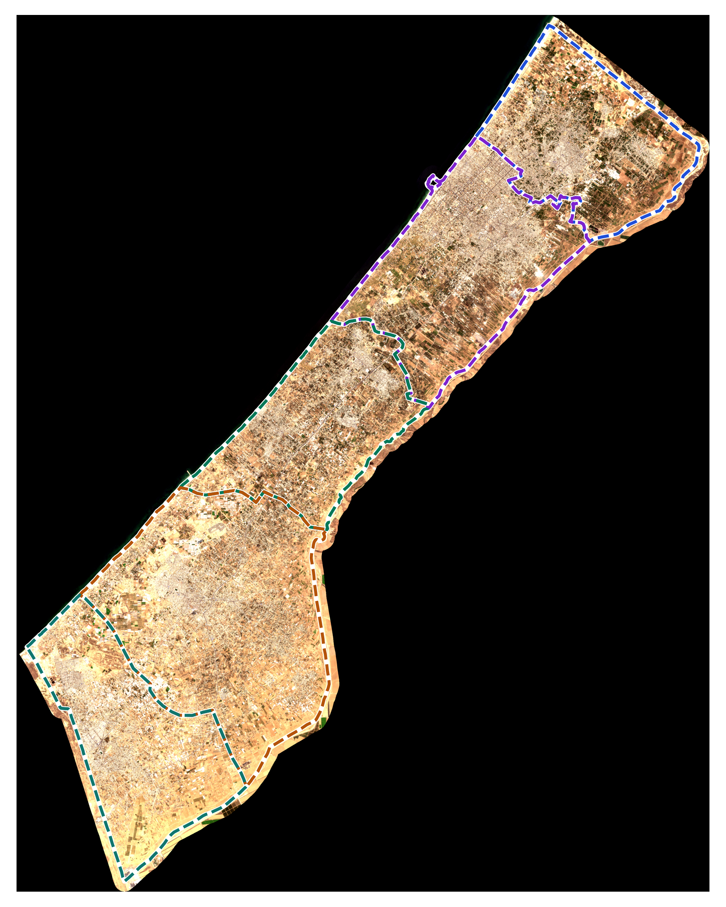
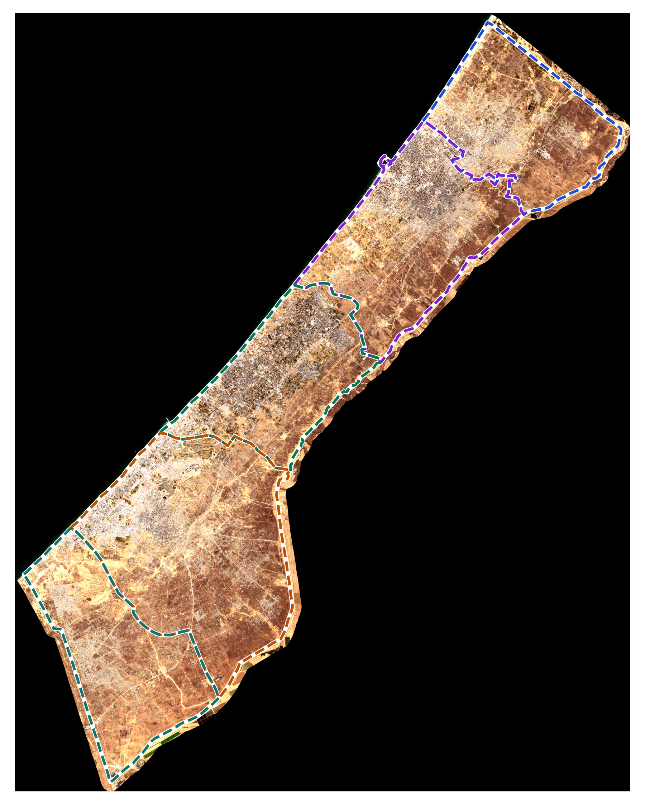

الرحلة التفاعلية بين محافظات قطاع غزة الخمس (Interactive Fly-To)
انقر على أي فصل للانتقال الجغرافي الفوري، واستعراض الإحصائيات الرسمية والحدود الإدارية بدون أي تشويش نصي
قطاع غزة بالكامل
نطاق دراسة متكامل يشمل المحافظات الخمس من بيت حانون شمالاً إلى رفح جنوباً. يوضح التحليل تدمير 163,940 منشأة ومسح كتل عمرانية بنسبة تضرر 66.4%.
ساتر المقارنة التفاعلي قبل وبعد (Interactive Swipe Slider)
حرك المقبض يميناً ويساراً لمقارنة خط الأساس قبل الحرب (أكتوبر 2023) مع الوضع الراهن الشامل (2026)


الرسم البياني والجدول الإحصائي الشامل للمحافظات الخمس
مقارنة رسمية موثقة مستخرجة من قاعدة البيانات الجغرافية Gaza_FullStrip_Master.gdb
| المحافظة | المساحة | مدمر كلياً | دمار شديد | دمار متوسط | الإجمالي | النسبة |
|---|---|---|---|---|---|---|
| شمال غزة | 61 كم² | 14,850 | 8,920 | 9,480 | 33,250 | 78.2% |
| محافظة غزة | 74 كم² | 21,340 | 11,810 | 16,420 | 49,570 | 74.5% |
| دير البلح (الوسطى) | 58 كم² | 5,410 | 4,230 | 6,010 | 15,650 | 51.4% |
| محافظة خانيونس | 108 كم² | 15,220 | 10,640 | 14,980 | 40,840 | 63.1% |
| محافظة رفح | 64 كم² | 10,910 | 5,830 | 7,890 | 24,630 | 58.6% |
| الإجمالي العام | 365 كم² | 67,730 | 41,430 | 54,780 | 163,940 | 66.4% |
مركز تحميل مخرجات المشروع المعتمدة
كافة المخرجات التنفيذية والأكاديمية متاحة للتحميل المباشر بجودة 300 DPI وكود مصدري كامل
دليل العمل التطبيقي في ArcGIS Pro
دليل A4 مصور من 6 فصول يشرح تطبيق الأدوات خطوة بخطوة بدون أي معادلات معقدة.
لوحة الماستر الكارتوغرافية A3
لوحة 300 DPI خالية تماماً من التسميات المشوهة مع مفتاح خارجي شامل ورسم بياني.

العرض التقديمي الأصلي (.pptx)
عرض تقديمي من 12 شريحة عريضة 16:9 بتنسيق أبيض أنيق وخط Cairo معتمد.
مشروع ArcGIS Pro وقاعدة GDB
ملف المشروع .aprx وقاعدة البيانات Geodatabase تضم كافة طبقات المحافظات ونقاط UNOSAT.
جدول البيانات الإحصائية (CSV)
الأرقام التفصيلية المعتمدة لكل محافظة (المساحات، التعداد، فئات الدمار، والركام).
بيانات التوثيق والمراجع الرسمية
توثيق شامل لمصادر الأقمار الصناعية (UNOSAT, ESA, OCHA, UNEP, PCBS).